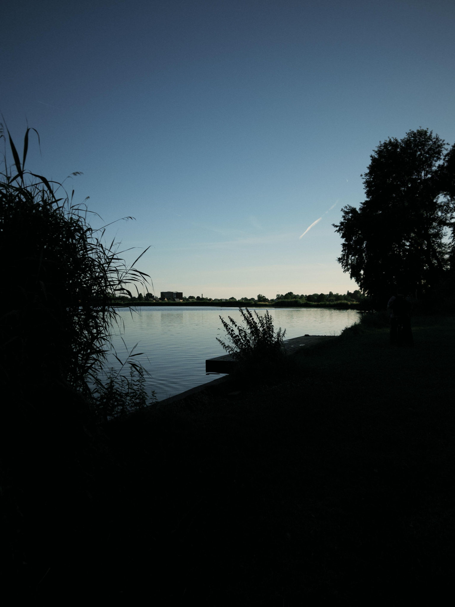
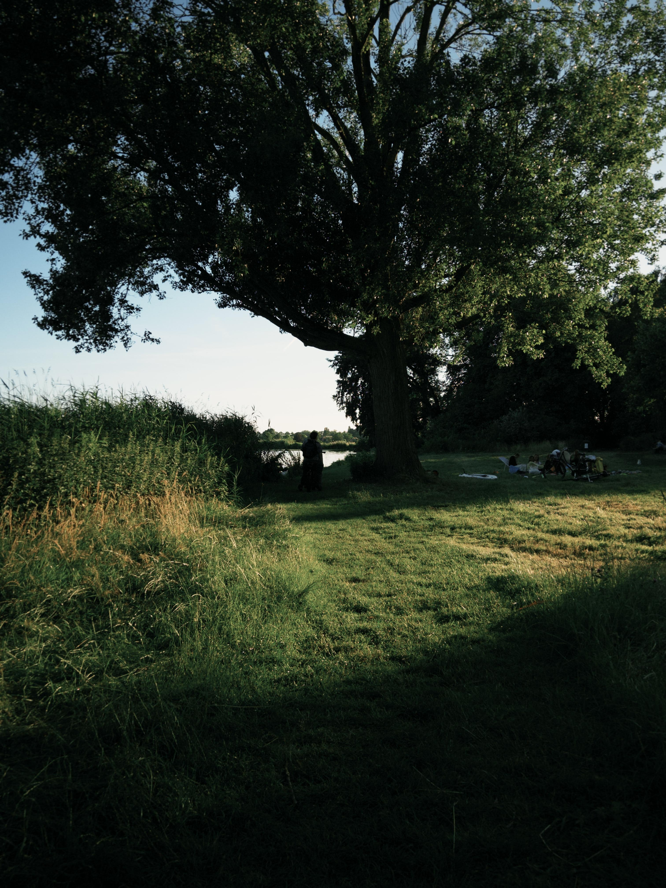

Voor wie is deze route?
Deze wandelroute is vooral bedoeld voor gezinnen en families die samen iets willen ondernemen. De route draait niet alleen om wandelen, maar ook om gezellig samen buiten zijn.
De Molenplas is een geschikte plek voor gezinnen en families die samen een ontspannen wandeling willen maken. De groene omgeving en het water zorgen ervoor dat je wandelen makkelijk kunt combineren met een gezellige middag buiten.
Deze wandelroute is vooral bedoeld voor gezinnen en families die samen iets willen ondernemen. De route draait niet alleen om wandelen, maar ook om gezellig samen buiten zijn.

Tijdens de wandeling loop je door een groene omgeving en langs het water. Hierdoor krijg je een rustige wandeling waarbij je genoeg van de omgeving kunt zien zonder door een druk stadsgebied te hoeven lopen.

Na de wandeling kun je nog wat langer in de omgeving blijven en ontspannen. Daardoor is de Molenplas vooral geschikt wanneer je van de wandeling een langer familie-uitje wilt maken.